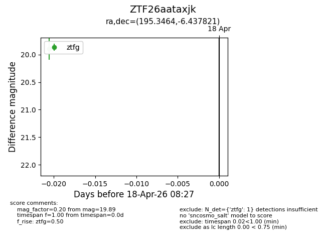
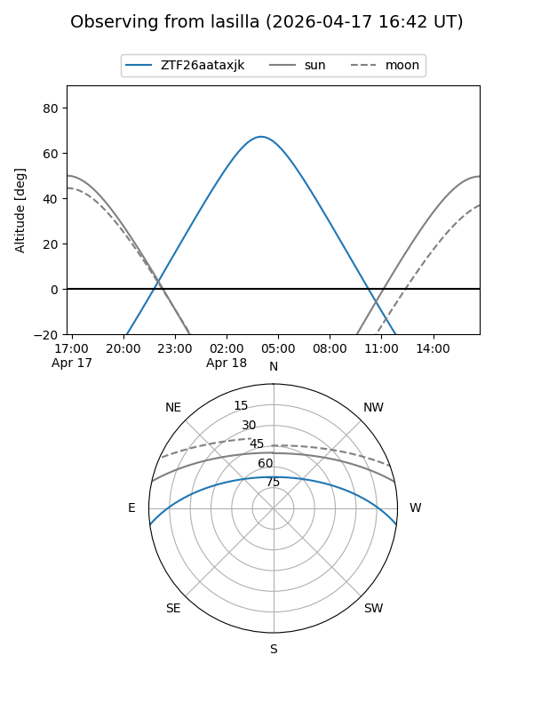
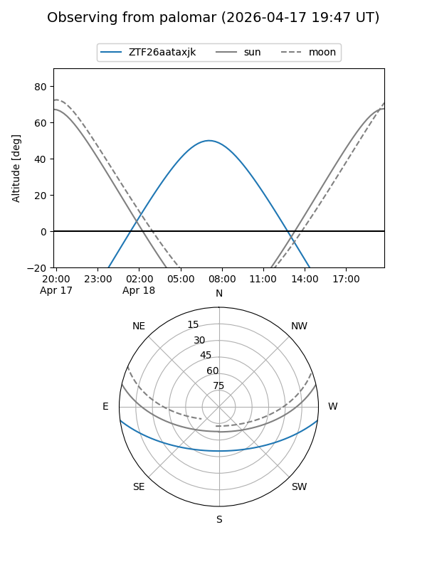
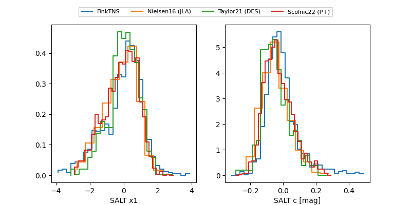

ZTF26aataxjk
Target ZTF26aataxjk at 2026-04-18 08:33
Aliases and brokers:
FINK: link
Lasair: link
ALeRCE: link
alt names
ZTF26aataxjk (ztf,fink_ztf)
Coordinates:
equatorial (ra, dec) = 195.3464,-6.43782
equatorial (HMS+DMS) = 13:01:23.14,-06:26:16.15
galactic (l, b) = (307.3945,+56.34771)
Flags:
Photometry:
last ztfg=19.89
1 ztfg detections
Lightcurve

Visibility


Additional plots
